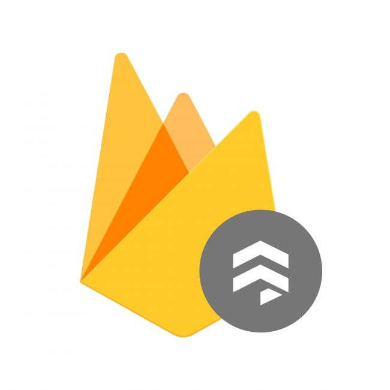

ChatApp Project Case Study
-

Overview
The ChatApp is a native mobile chat application, built using React Native, Expo, and Google Firestore. It features a streamlined chat interface that allows users to easily share messages, images, and location data with friends and family. Asynchronous offline storage keeps the app usable while offline, and a real-time Firebase/Firestore database on the server side makes for lightning fast and consistent functionality while online.
-
Purpose & Context
More and more people use their phones for daily tasks, such as shopping, creating to-do lists, communicating with friends, scheduling meetings, and more. This app was developed as a portfolio project for the CareerFoundry Full-Stack Web Development course, demonstrating proficiency in building mobile applications using React Native, Firebase, Expo, and related technologies. With mobile chat apps among the most popular in the world, creating a fully functional chat app with React Native is an indispensable skill.

-
Objective
The goal of the ChatApp project was to create a feature-rich, responsive chat application for mobile devices that enables users to communicate in real-time. Key objectives included:
- Chat Interface: Providing a chat interface that supports seamless message sharing.
- Images and Location Info: Allowing users to send images and location data via the chat.
- Offline Usability: Ensuring offline access to previously received messages.
- Accessibility: Implementing accessibility features to support screen readers.
- Gifted Chat/Firestore: Building the app using the Gifted Chat library and storing data in Google Firestore Database.
-
Technology Stack Decisions
Careful scrutiny of the Project Brief led me to some key decisions about technologies to use for this application. The Project Brief also included specifics on the UI and provided some assets which we were required to utilize. Here is my rationale for the technologies chosen:

React Native
React Native allows for building cross-platform mobile apps using a single codebase. This significantly reduces development time and complexity while providing a native look and feel for both iOS and Android users. The framework also supports third-party libraries and native components, ensuring optimal performance.
Gifted Chat Library
React Native's Gifted Chat library provides a highly customizable chat UI out-of-the-box, significantly accelerating the development process. It supports message bubbles, avatars, media attachments, and various other features, reducing the need for reinventing the wheel.
Firebase Anonymous Authentication
Firebase Anonymous Authentication enables user identification without requiring explicit sign-ups or email verification. This simplifies the onboarding process, allowing users to immediately access chat rooms while maintaining a layer of user differentiation and security.
Firestore Database
Firestore, a NoSQL cloud database, is ideal for real-time applications. It supports seamless synchronization across devices, offline data access, and secure data storage for chat messages and images. Its integration with Firebase Authentication ensures data integrity and user-specific access.
Expo
Expo provides a set of tools and services to facilitate building and testing React Native apps. Its built-in development environment, managed workflow, and support for third-party plugins significantly accelerate the development process and simplify deployment across platforms.
Developent Process
-
Development EnvironmentReact Native and ExpoThe first step in creating the ChatApp was setting up the development environment with React Native and Expo.
I structured the app by creating two key components: Start.js for the start screen and Chat.js for the chat screen.
With navigation handled by React Navigation, I implemented user input and background color customization before testing the basic functionality on both Android and iOS.
The project was then committed to GitHub and recorded for documentation purposes. -
Integrating Gifted Chat LibraryThe second step involved incorporating the Gifted Chat library into the chat screen. I imported and rendered a GiftedChat component in Chat.js, managing the messages state with useState() and adding initial static messages via useEffect().
To ensure a smooth user experience, I used KeyboardAvoidingView for both Android and iOS, preventing the keyboard from covering the input field.
After thoroughly commenting on the code, I updated the GitHub repository to document the progress. -
Integrating Firebase and FirestoreThe next step was to integrate Firebase and Firestore for authentication and message storage. I created a new Firestore database, updated its read and write rules, and enabled anonymous sign-in.
After installing firebase, I initialized Firebase and Firestore in App.js, passing the database object to the chat component. In Start.js, I implemented anonymous user login with signInAnonymously(), passing the user ID, name, and background color to the chat screen upon successful login.
In Chat.js, I used the Firestore onSnapshot() listener to fetch messages in real-time, ensuring messages were sorted by createdAt in descending order. I updated the onSend() function to save new messages directly to Firestore using addDoc().
Again, I pushed everything to GitHub, then tested and recorded the app's behavior for documentation. -
Real-Time Network ConnectivityThe next step in the process was implementing a real-time network connectivity detection system and managing offline message storage. Using useNetInfo() to monitor network status, I wrote functions to toggle network status and passed that information in a prop to Chat.js, allowing the chat screen to adapt its data source based on connectivity.
In Chat.js, messages were fetched from Firestore if the connection was present, and local storage if not. Additionally, the input toolbar was disabled in offline mode to prevent users from composing messages or sending images.
Testing the app in both online and offline modes was crucial to ensure seamless functionality. Expo and Android Studio, as well a several handheld devices, were used in this phase to ensure functionality.
Finally, I documented the project, updated the GitHub repository, and recorded a demonstration showcasing the app's behavior in offline mode. The recording illustrated message retrieval from AsyncStorage and the absence of the input toolbar, effectively demonstrating the implemented offline functionality. -
Advanced Features and DocumentationThe final stage of the ChatApp project focused on implementing advanced communication features and refining the documentation.
I enhanced the chat screen by adding a button that opened a custom action sheet, allowing users to select an image from the library, take a photo, or share their current location. By connecting the app to Firebase Storage, images and location data could be securely uploaded and retrieved.
I created the custom action sheet through a new CustomActions.js component, integrated with GiftedChat to handle image picking, camera usage, and geolocation sharing. I also customized the chat's message bubbles to display maps for location messages.
After thoroughly testing these features and ensuring accessibility, I updated the GitHub repository and documented the app's setup in a comprehensive README.md file. The documentation included step-by-step instructions for setting up the development environment, configuring the database, and installing necessary libraries.
-
Conclusion
Developing the ChatApp presented a range of challenges and valuable learning experiences. One of the most significant challenges was implementing seamless real-time messaging and offline functionality using Firebase Firestore. Coordinating Firestore synchronization with AsyncStorage to maintain a consistent chat experience required careful management of the network status and message caching mechanisms.
Another challenge was incorporating various media-sharing features, particularly managing permissions for accessing the device's camera, image library, and location services. Ensuring a smooth user experience involved not only adhering to React Native's permissions requirements but also carefully structuring custom action sheets to deliver a polished user interface.
Despite these challenges, the project was a valuable learning journey. I learned how to effectively use React-Native as a platform, Firebase and Firestore as backend services, and GiftedChat as a third-party library. I also gained insights into implementing advanced features for media sharing, enhancing accessibility through throughtful UI design, and modularizing components for reusability.
Firebase and Firestore, utilize anonymous authorization of users, enhance accessibility features, and implement modular, reusable components. Utilizing GiftedChat provided insight into integrating third-party libraries and customizing them to fit specific requirements.If I were to approach this project again, I would:
- Implement More Advanced Features: Always wanting to push the envelope, I am always thinking of new features to implement, such as Chat Channels, Contact Lists, and Push Notifications to expand usability. However, it is also important to keep focus on present tasks and not get sidetracked.
- Modularize Features More Extensively: Breaking down features like media-sharing and geolocation into smaller, more focused components would have streamlined development and improved code readability.
- Expand Testing Strategy: Incorporate automated tests for critical features like message sending, media sharing, and offline behavior to catch bugs earlier and ensure consistent functionality.
Overall, the ChatApp project showcased the power of React Native for cross-platform mobile development and solidified my understanding of Firebase's comprehensive backend services. Moving forward, I'll carry these lessons into future projects, refining my development workflow and continuing to build intuitive, user-friendly applications.